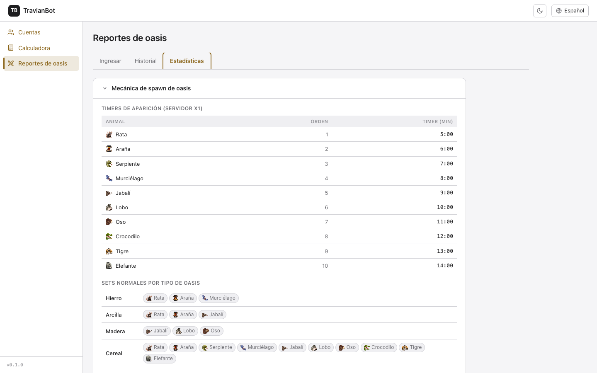
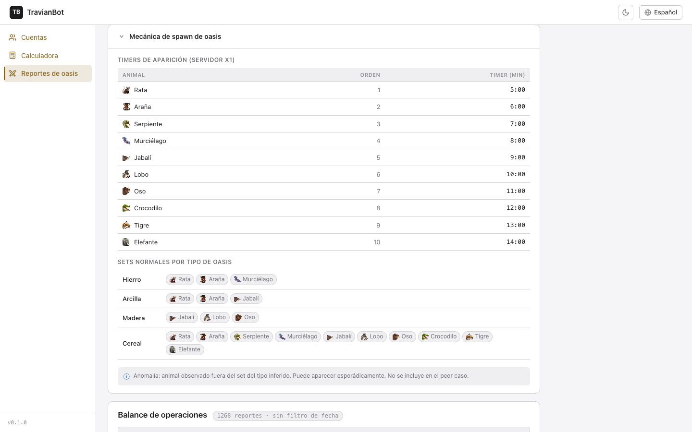
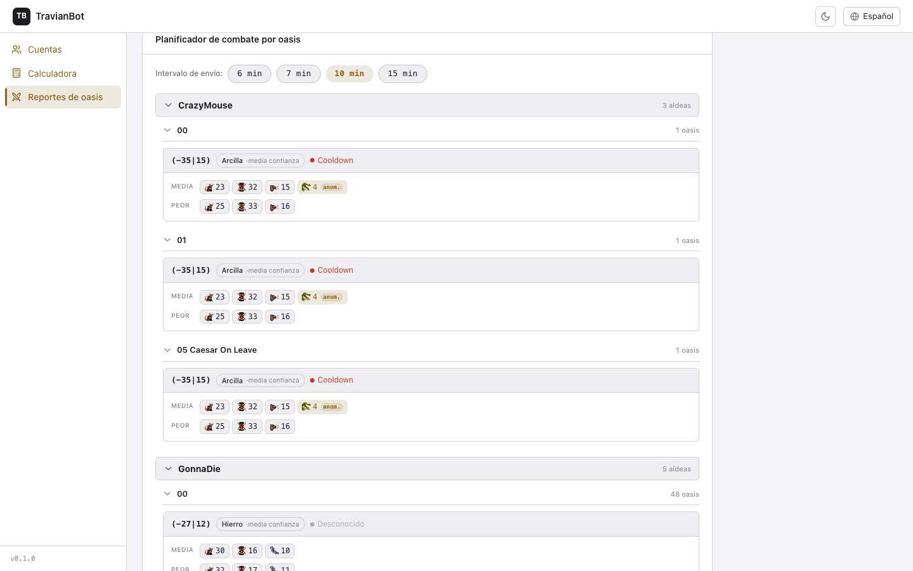
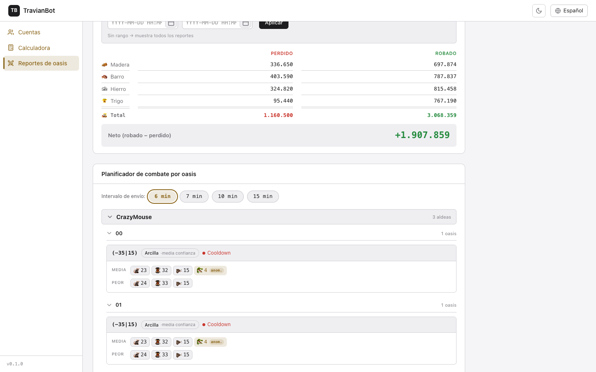
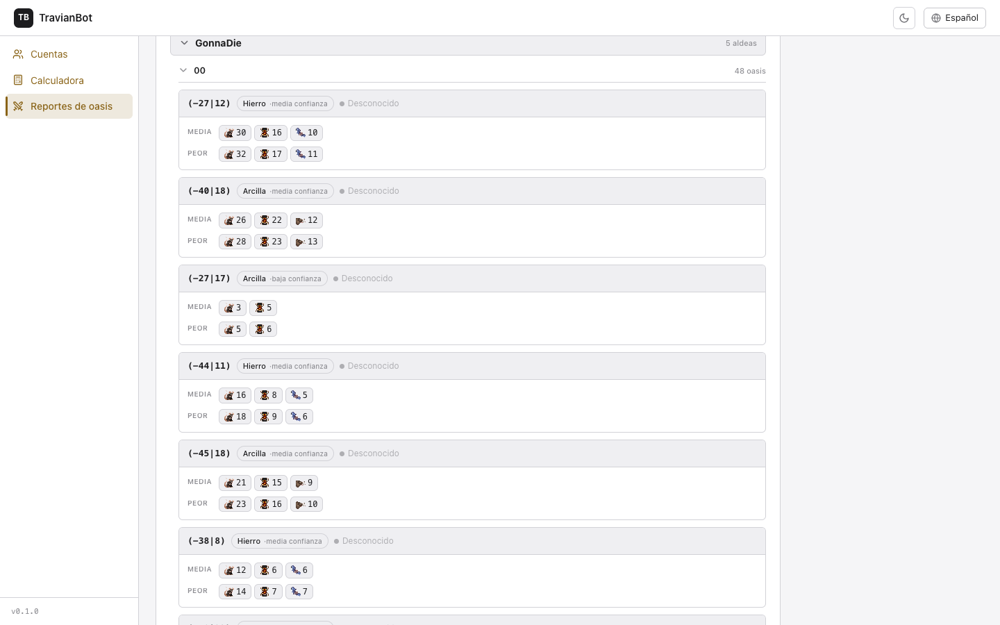
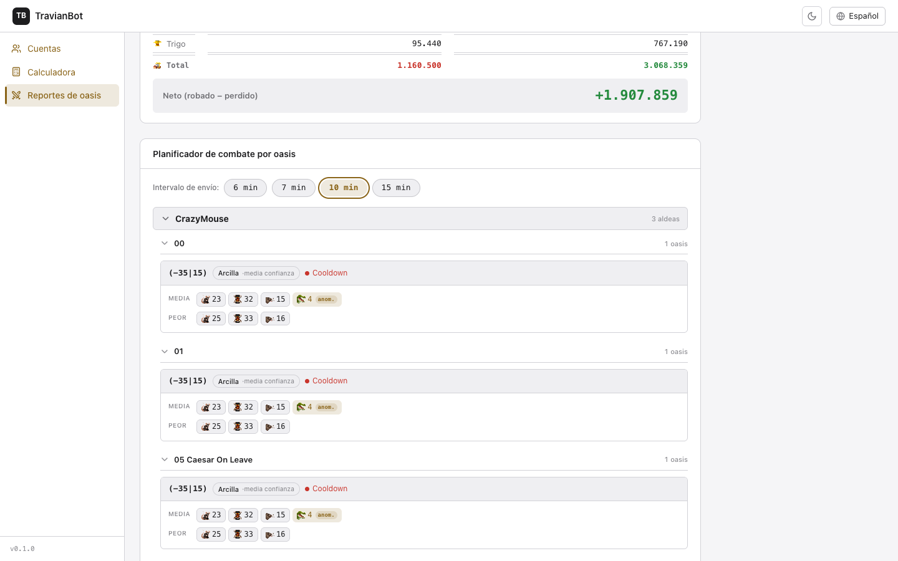
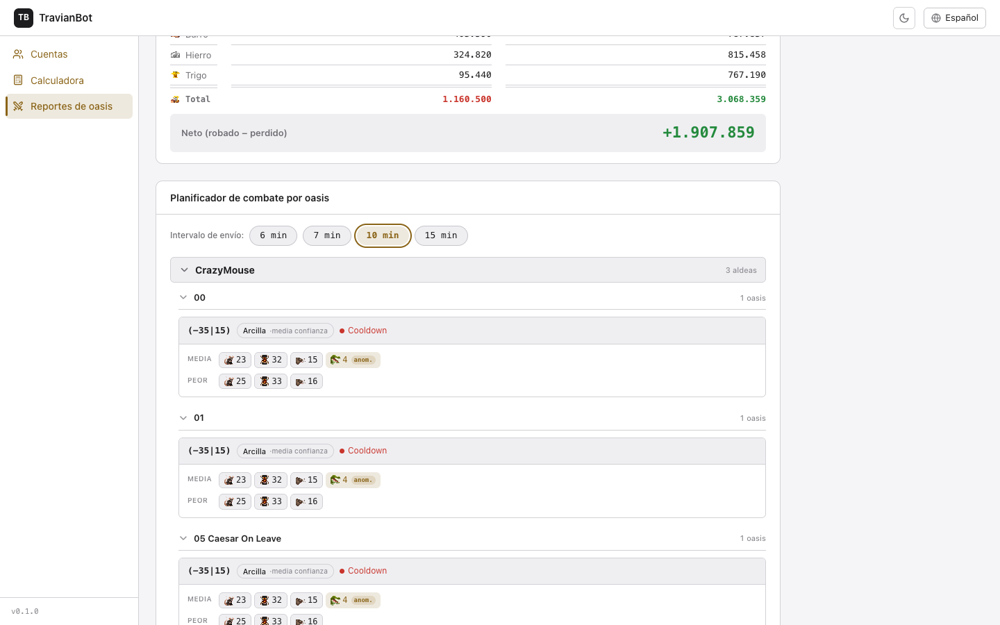
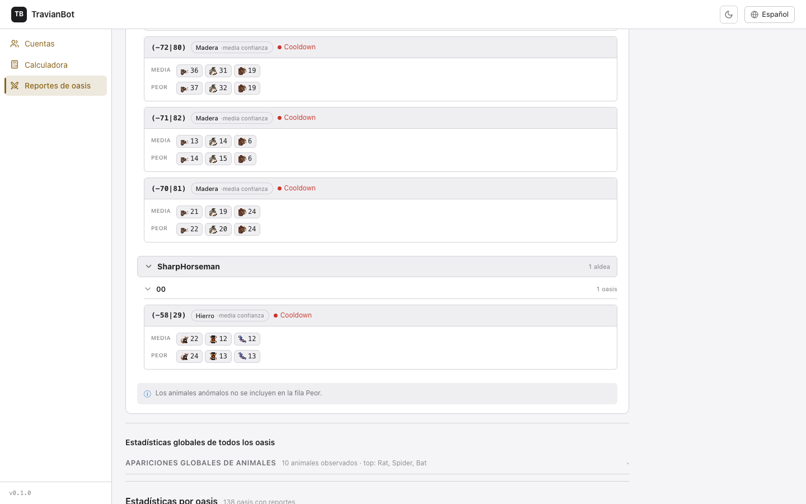
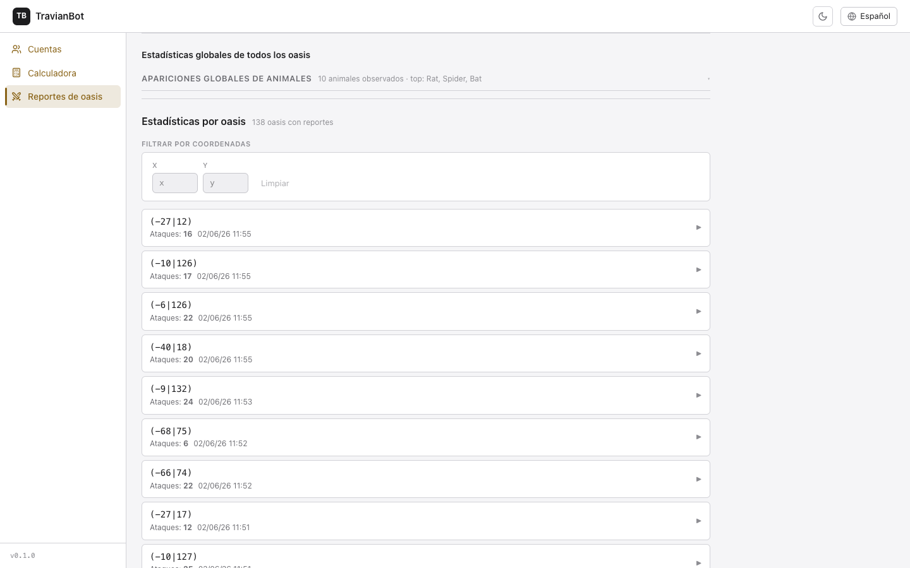
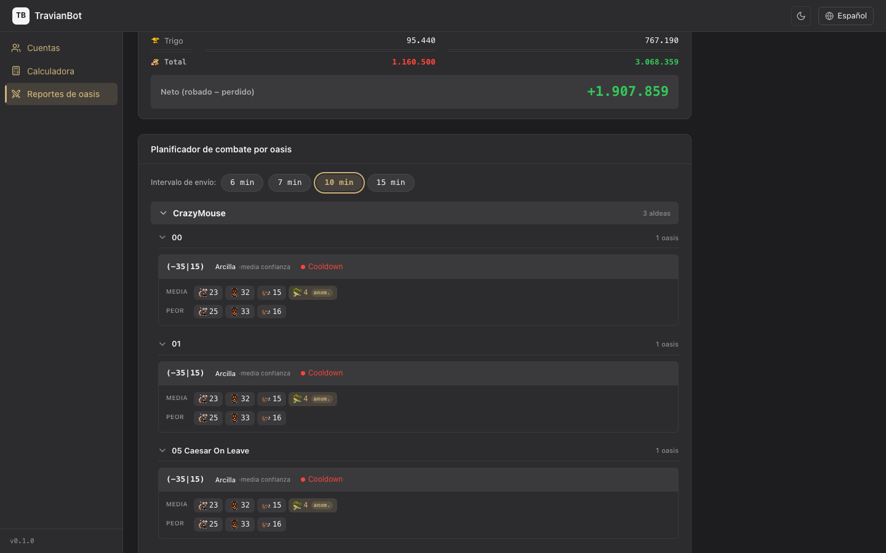

Estadísticas de mecánica de spawn de oasis
Esta sección del bot analiza los reportes de combate que has acumulado atacando oasis para responder una pregunta clave: ¿cuántos animales voy a encontrar la próxima vez que ataque? Aprende a leer cada panel para planificar tus oleadas con precisión.
1 Vista general de la pestaña Estadísticas
Entra a Reportes de oasis desde el menú lateral y haz clic en la pestaña Estadísticas. La página carga de forma independiente: si un panel tarda o falla, el resto sigue funcionando.

Los cinco bloques que encontrarás en esta pestaña, en ese orden, son:
| # | Panel | Para qué sirve |
|---|---|---|
| 1 | Leyenda de spawn | Referencia educativa: timers por animal y sets de animales por tipo de oasis. Colapsable. |
| 2 | Balance de operaciones | Recursos perdidos (tropas enviadas) vs. robados en un rango de fechas. |
| 3 | Planificador de combate | El núcleo: para cada oasis, combinación típica (Media) y peor caso posible (Peor) según el intervalo de envío que elijas. |
| 4 | Estadísticas globales | Distribución de apariciones de animales en todos los oasis observados. |
| 5 | Lista de oasis | Tabla navegable de todos los oasis con reportes: coordenadas, número de ataques y fecha del último. |
Si acabas de entrar al bot y aún no has ingerido ningún reporte, la leyenda se desplegará automáticamente para explicarte qué datos necesitas importar primero. Usa la pestaña Ingresar para pegar tus reportes de combate.
2 Panel "Leyenda / Mecánica de spawn de oasis"
Este panel es una referencia que explica cómo funciona el juego. No requiere datos: su contenido es fijo. Está colapsado por defecto en visitas sucesivas para no ocupar pantalla, pero puedes abrirlo en cualquier momento haciendo clic en su encabezado.

Tabla de timers de aparición
Cada animal reaparece en un oasis con un timer fijo, contando desde que fue eliminado en el último ataque. En un servidor estándar (x1) los tiempos son:
| Animal | Orden | Timer (min) | Lo que implica |
|---|---|---|---|
| Rata | 1 | 5:00 | Reaparece muy rápido; con intervalo de 6 min ya puede estar de vuelta. |
| Araña | 2 | 6:00 | Al límite del intervalo de 6 min. |
| Serpiente | 3 | 7:00 | Solo reaparece si tu intervalo es 7 min o más. |
| Murciélago | 4 | 8:00 | Necesitas intervalo 10 min o más para verlos en el peor caso. |
| Jabalí | 5 | 9:00 | |
| Lobo | 6 | 10:00 | Con 10 min de intervalo, a partir de aquí todos pueden reaparecer. |
| Oso | 7 | 11:00 | Solo reaparecen si tu intervalo es 15 min. |
| Crocodilo | 8 | 12:00 | |
| Tigre | 9 | 13:00 | |
| Elefante | 10 | 14:00 |

Sets normales por tipo de oasis
El tipo de oasis (hierro, arcilla, madera, cereal) determina qué animales "pertenecen" a ese oasis de manera habitual. El bot usa esta información para inferir el tipo cuando no lo conoce con certeza, y para distinguir los animales normales de los anómalos.
| Tipo | Animales del set normal | Nota |
|---|---|---|
| Hierro | Rata, Araña, Murciélago | Set pequeño, animales de bajo orden. |
| Arcilla | Rata, Araña, Jabalí | Similar a hierro pero con Jabalí en vez de Murciélago. |
| Madera | Jabalí, Lobo, Oso | Animales de orden medio-alto; más fuertes que hierro/arcilla. |
| Cereal | Rata, Araña, Serpiente, Murciélago, Jabalí, Lobo, Oso, Crocodilo, Tigre, Elefante | Set universal: puede aparecer cualquier animal. Potencialmente el más peligroso. |
Anomalía: un animal observado fuera del set normal de su tipo de oasis. Puede aparecer esporádicamente por causas del juego. El bot lo marca con el badge anom. y lo excluye del cálculo de peor caso, ya que no es un comportamiento predecible.
3 Balance de operaciones
El balance responde: ¿estoy ganando o perdiendo recursos con mis ataques a oasis? Suma todos los recursos robados y todos los perdidos (en tropas) dentro del rango de fechas que establezcas.
Filtros de fecha
Los campos Desde y Hasta permiten acotar el período analizado. Si los dejas vacíos, el balance muestra todos los reportes disponibles en la base de datos (sin filtro de fecha).
- Haz clic en el campo Desde y escribe la fecha y hora de inicio en formato
YYYY-MM-DD HH:MM. - Repite en Hasta con la fecha de fin.
- Pulsa Aplicar para recalcular el balance con ese rango.
Si el neto es negativo, significa que has perdido más en tropas de lo que has robado en ese período. Suele ocurrir en oasis de cereal o cuando el intervalo de envío es demasiado corto y encuentras animales ya repuestos.
4 Planificador de combate por oasis
Este es el panel central de la pestaña. Combina lo que el bot ha observado en tus reportes históricos con la mecánica de spawn para darte dos cifras por oasis: cuántos animales sueles encontrar (Media) y cuántos encontrarías en el peor caso posible (Peor), según el intervalo de tiempo que pase entre tus envíos.
El selector de intervalo (6 / 7 / 10 / 15 min)
Antes de leer cualquier cifra, elige el intervalo que representa el tiempo que pasa entre el último ataque a un oasis y el siguiente. Cuanto mayor sea el intervalo, más animales habrán tenido tiempo de reaparecer y mayor será la columna Peor.


| Intervalo | Animales que pueden reaparecer | Cuándo usarlo |
|---|---|---|
| 6 min | Rata (5 min), Araña (6 min) | Envíos muy frecuentes, farm de oasis pequeños. |
| 7 min | Rata, Araña, Serpiente (7 min) | Farm rápido que alcanza la Serpiente. |
| 10 min | Rata a Lobo (todos con timer ≤ 10 min) | El caso más habitual en farm automatizado. Valor por defecto. |
| 15 min | Todos los animales (hasta Elefante con 14 min) | Oleadas lentas o servidores con bono de velocidad bajo. |
Jerarquía Jugador → Aldea → Oasis
Los oasis se agrupan en tres niveles. El bot construye esta jerarquía a partir de la información de los reportes: cada reporte indica desde qué aldea de qué jugador salió el ataque.

- J Jugador — sección colapsable con el nombre del jugador y el número de aldeas. Expandida por defecto. Clic en el encabezado para colapsar.
- A Aldea — dentro de cada jugador, las aldeas que han generado reportes. El número a la derecha indica cuántos oasis distintos ha atacado esa aldea.
- O Oasis — bloque con coordenadas, tipo inferido, nivel de confianza, estado de spawn, y las filas Media / Peor.
Filas Media y Peor
Cada bloque de oasis muestra dos filas de chips de animales. Leerlas correctamente es la clave para preparar tu oleada.

| Fila | Qué muestra | Cómo interpretarlo |
|---|---|---|
| MEDIA | El máximo número de individuos de ese animal que el bot ha visto en una sola ráfaga de ataques. Incluye animales anómalos (marcados con anom.). | Es el "techo observado". Si mandas tropas suficientes para esta fila, cubrirás el historial real. Pero puede haber un peor caso que aún no hayas visto. |
| PEOR | La peor combinación teórica posible para el intervalo seleccionado. Calcula cuántos individuos podrían haber reaparecido completamente según su timer. No incluye animales anómalos. | Dimensiona tus tropas para este número si quieres cubrir el caso más adverso predecible. Los anómalos se excluyen porque son esporádicos. |
Los números en la fila Peor son conteos absolutos de animales, no multiplicadores. Si ves "25" en Rata, significa que en el peor caso pueden estar presentes 25 ratas, no 25 veces la media.
Tipo inferido y nivel de confianza
A menudo el bot no sabe el tipo oficial de un oasis (esa información solo aparece en el mapa del juego). En su lugar, infiere el tipo comparando los animales observados con los sets conocidos de hierro, arcilla, madera y cereal, usando un algoritmo de similitud (similitud de Jaccard).
| Confianza | Significado |
|---|---|
| alta confianza | El set de animales observado encaja muy bien con un solo tipo. El tipo inferido es fiable. |
| media confianza | Hay cierto solapamiento entre tipos. El más probable está indicado, pero podría ser otro. |
| baja confianza | El set observado no encaja claramente con ningún tipo. Faltan datos o es un cereal atípico. |
Estado de spawn del oasis
Junto al tipo aparece el estado actual del oasis, calculado a partir del tiempo que ha pasado desde el último ataque registrado.

| Estado | Indicador visual | Qué significa |
|---|---|---|
| Repoblando | Repoblando | Ha pasado suficiente tiempo desde el último ataque. Los animales han tenido tiempo de reaparecer. Es el momento óptimo para atacar. |
| Cooldown | Cooldown | El oasis fue atacado recientemente y aún no ha pasado el umbral de repoblación. Atacar ahora encontrará muy pocos animales. |
| Desconocido | Desconocido | No hay información suficiente para determinar el estado (ataque muy antiguo o primer reporte). Asumir precaución. |
Animales anómalos
Cuando el bot observa un animal que no pertenece al set normal del tipo inferido de ese oasis, lo marca con el badge dorado anom.. Este animal aparece en la fila Media (porque fue visto en la realidad) pero queda excluido de la fila Peor (porque su presencia no es predecible ni sistemática).
Si ves muchos animales anómalos en un oasis, puede indicar que el tipo inferido es incorrecto (confianza baja) o que ese oasis tiene un comportamiento realmente atípico en el servidor. En ese caso, dimensiona tus tropas también para la fila Media.
Varios jugadores en el mismo planificador
El planificador muestra todos los jugadores que han generado reportes, cada uno con su sección propia. Esto permite al operador del bot gestionar varias cuentas desde una sola instancia: los datos de cada cuenta permanecen separados y claramente identificados.

Los jugadores aparecen en orden alfabético, con "Desconocido" siempre al final. Las aldeas dentro de cada jugador también se ordenan alfabéticamente.
5 Estadísticas globales de todos los oasis
Este panel agrega la información de todos los oasis con reportes para darte una visión de conjunto: qué animales han sido observados y con qué frecuencia, independientemente de a qué oasis concreto pertenecen.

La sección Apariciones globales de animales puede expandirse (clic en el encabezado) para ver la distribución completa por especie. El resumen muestra los tres más habituales.
6 Lista de oasis individuales
Debajo de las estadísticas globales aparece la lista completa de oasis con reportes. Cada fila muestra las coordenadas del oasis, el número de ataques registrados y la fecha del último ataque. Puedes filtrar por coordenadas usando los campos X e Y.
7 Modo oscuro
Toda la pantalla de Estadísticas funciona en modo oscuro. El toggle de tema está en la esquina superior derecha de la barra de navegación (icono de luna / sol). El bot recuerda tu preferencia entre sesiones.

▶ Flujo de uso habitual
Guía condensada para planificar una oleada de ataques a oasis desde cero.
- Ve a Reportes de oasis › Ingresar y pega los reportes de combate recientes. Cuantos más reportes, más precisa será la columna Media.
- Abre la pestaña Estadísticas.
- En el Planificador de combate, elige el intervalo de envío que corresponde a tu ciclo de farm (normalmente 10 min).
- Localiza el jugador y la aldea desde la que envías. Abre la aldea para ver sus oasis.
- Para cada oasis, lee la fila Peor con el intervalo elegido. Ese es el número de tropas que necesitas para cubrir el peor caso predecible.
- Si el oasis tiene estado Cooldown, espera antes de atacar: encontrarás pocos animales y no compensa el viaje.
- Si un animal tiene el badge anom., considéralo un extra ocasional; no cuentes con él ni lo temas de forma sistemática.
🔖 Última revisión: 2026-06-02 — Manual generado con capturas reales de la app (138 oasis, jugadores: CrazyMouse, GonnaDie, SharpHorseman). Capturas obtenidas con Puppeteer-core contra localhost:5173.
Ver también: Manual de Farm Lists · Manual de Cuentas y Mundos · Documentación técnica